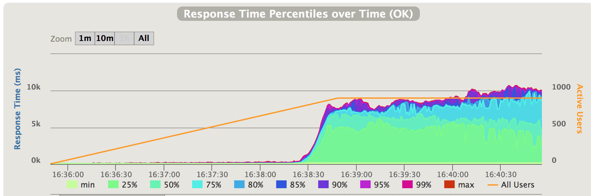
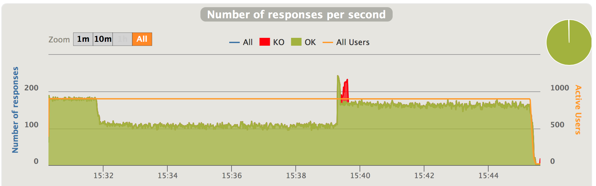
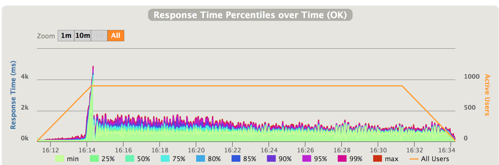
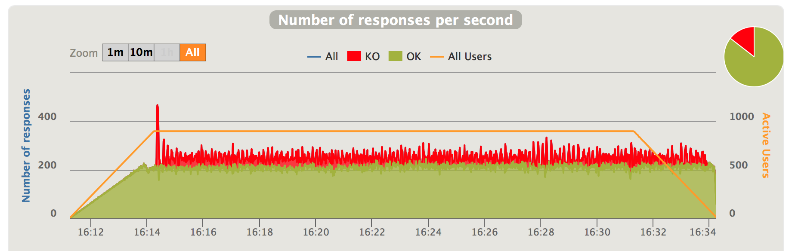
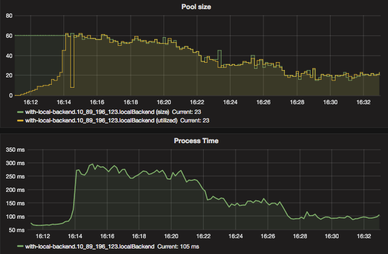

Motivations
Kanaloa is designed mainly to help your service to deal with oversaturated traffic, i.e. when the incoming traffic exceeds the capacity of your service. When traffic oversaturation occurs, all the excessive traffic will have to wait in some queues in the service. The latencies quickly grow to the point where no requests get served within the acceptable time frame. Worse, if the incoming traffic doesn’t significantly slow down due to the high latency, e.g. when the users keep retrying regardless of the failed requests, the service will probably experience out-of-memory melt-down further down the line.
There are two types of traffic oversaturation scenarios which I will call as positive oversaturation and negative oversaturation respectively.
Positive oversaturation
Positive oversaturation refers to the ones that occur when the incoming traffic increases to exceed the capacity. To better demonstrate the effect of a positive oversaturation, we created a mock service and ran a load simulation on it with Gatling. Our mock service can handle 20 concurrent requests in parallel with the maximum throughput at roughly 200 requests/second. The simulation gradually ramps up the incoming traffic. See the response time reported by Gatling below.

Fig 1. Positive traffic oversataturation - response time
As can be seen in the chart, when the traffic saturation happens at 200 requests/second, the latencies increased dramatically from around 100ms to over 6-7 seconds. In our test, we limit the number of concurrent connection attempts to 900, given this limitation and high latencies, the incoming traffic falls back to 200 requests/second, but latencies keeps increasing (see the chart below)

Fig 2. Positive traffic oversataturation - responses per second
Obviously, if the incoming traffic remains at 250 requests/second, i.e. if the high latencies didn’t slow down the incoming traffic, the latencies will continue to grow dramatically.
Negative oversaturation
Negative oversaturation refers to the ones that occur when the capacity is negatively affected to below the incoming traffic. Again, let’s use a simulation to demonstrate this scenario. In this one the mock service starts with a capacity of 220 requests/second serving a traffic of 180 requests/second. Then it’s capacity degrades by 30% capacity to 150 requests/second at roughly 15:32, which means that the capacity is 30 requests/second short.

Fig 3. Negative traffic oversataturation - response time
In a matter of seconds, the latency grew to over 10 seconds. Then due to this high latency the incoming traffic falls back to 110 requests/second. But the latencies continued to grow. At roughly 15:39 the capacity recovered. But due to the contention and queue the previous traffic overflow already caused, the latencies remains dreadful.

Fig 4. Positive traffic oversataturation - responses per second
One common way to deal with positive oversaturation is to set a traffic threshold according to known capacity and shed the excessive traffic above it. The capacity of the service has to be measured beforehand using some stress tests. Obviously, this approach won’t work in the negative oversaturation scenario in which the capacity is changing and can no longer be measured beforehand. Negative oversaturation happens more often in complex systems, such as microservices, where serving a request involves multiple layers of internal and/or external dependencies. To name a few, network anomaly, external service degradation and disruptive competition of internal resources all can negatively affect the capacity of your service.
One approach of exerting backpressure with dynamic capacity is pull-based backpressure. The basic idea is to have each worker in the processing chain “pull” work from the source. A recent example of this approach is the Akka Stream. The main implementation cost of this approach is that all processing steps must implement the pull mechanism based on their capacity, this may be challenging for a service that relies on other services, e.g. a database, whose interface is push based.
The Kanaloa solution
Kanaloa took a different approach to exert backpressure with changing capacity. It’s a reverse proxy in front of the service that treats the service as a black box. It adaptively throttles the concurrent requests the service handles and thus limits the number of requests waiting in the queues internal to the service. This throttle is adaptive in the sense that, during an oversaturation, the concurrent requests the service handles is constantly being optimized according to the performance (measured by throughput and latency) Kanaloa observes from it. With this throttle in place, Kanaloa buffers the excessive traffic in its own queue with which it applies a traffic control mechanism called Proportional Integral controller Enhanced (PIE).
Here is the diagram:
The traffic goes through Kanaloa towards the service. The adaptive throttle in Kanaloa makes sure that the concurrent requests the service handles are bounded. When the concurrent requests at the service reach the bound, excessive requests will wait in the kanaloa queue. The PIE regulator rejects requests with a possibility based on the waiting time in the kanaloa queue.
The Adaptive Concurrency Throttle
To understand how adaptive concurrency throttle in Kanaloa works, we need to understand a bit more about how the service deal with concurrency. Usually, the service can handle only up to a certain number of concurrent request in parallel with optimal speed. When it receives more requests above the optimal concurrency, there will be some queuing and possibly contention inside the service. In another sentence, sending more requests to the service beyond the optimal concurrency isn’t going to improve the situation during oversaturated traffic. The enqueuing of the requests in the service will increase the latency. Furthermore, if the service implementation doesn’t control contention well, it will degrade the performance exponentially.
The kanaloa adaptive throttle controls the concurrent request the service handles by having a set of workers that pull work on behave of the service. These workers wait for result coming back from the service before they accept more work from the dispatcher. This way, the number of concurrent requests the service handles cannot exceed the number of the workers, i.e. the worker pool size. The kanaloa adaptive throttle then keeps track of throughput and latency at each pool size and optimizes the worker pool size (i.e. the concurrency) towards the one that provides the best performance (measured by throughput and latency). It achieves this by performing the following two resizing operations (one at a time) periodically:
- Explore to a random nearby pool size to try and collect performance metrics.
- Optimize to a nearby pool size with a better performance metrics than any other nearby sizes.
By constantly exploring and optimizing, the resizer will eventually walk to the optimal size and remain nearby. The optimal concurrency number changes when the environment changes, e.g. when the service recovers from degradation, or when the service capacity is ramped up with more instance deployment. In such cases, the adaptive throttle will start walking towards the new optimal worker pool size.
The PIE regulator
Now that the number of concurrent requests handled by the service is throttled, the excessive requests go to a queue created inside kanaloa. Kanaloa monitors this queue and apply a traffic regulation algorithm called PIE (Proportional Integral controller Enhanced) suggested in this paper by Rong Pan and his collaborators.
Unlike the common control scheme that simply limits the queue size, PIE regulator controls the time for which the requests wait in the kanaloa queue by dropping requests with a probability according to the current queue length and historical dequeue speed. Thus, PIE allows users to control with precision the latency caused by the queue. Here is the pseudocode of the algorithm:
Every update interval Tupdate
-
Estimation current queueing delay
currentDelay = queueLength / averageDequeueRate -
Based on current drop probability, p, determine suitable step scales:
if p < 1% : α = α΄ / 8, β = β΄ / 8 else if p < 10% : α = α΄ / 2, β = β΄ 2 else : α = α΄, β = β΄ -
Calculate drop probability as:
p = p + α * (currentDelay - referenceDelay) / referenceDelay + β * (currentDelay - oldDelay) / referenceDelay -
Update previous delay sample rate as
OldDelay - currentDelay
The regulator allows for a burst mode - during a short period it lets through all traffic. This helps avoid unnecessarily rejecting requests when it’s just a brief traffic spree.
Kanaloa in action
To test kanaloa, we created a mock service and put it behind an Akka Http server so that we can test how kanaloa helps this mock service. with Gatling. This mock service can handle X concurrent requests in parallel. If the service receives requests beyond X concurrent ones, it negatively impacts the processing speed as a simulation of contention. The excessive requests will wait in a queue inside the service which will cause some latencies.
Kanaloa dealing with positive traffic oversaturation
First we run the same simulation mentioned depicted in Fig 1, but this time we put kanaloa in front of the service and we let it run longer. The gatling results now look like this:

Fig 5. Positive traffic oversataturation with kanaloa - response time

Fig 6. Positive traffic oversataturation with kanaloa - responses per second
When the incoming traffic exceeds the capacity at 200 requests/second, we first see a spike of latencies to roughly 4 seconds; then it falls back to roughly 1-1.5 second. The spike is due to the burst mode enabled in kanaloa. In burst mode, kanaloa will not reject traffic, hence the high latencies. Burst mode is limited to a short period of time. As soon as it exits the burst mode, kanaloa starts to reject excessive traffic to keep latency in control. The latency gradually improves afterwards as kanaloa optimizing the throttle. It’s very easier to see the difference kanaloa makes comparing Fig 1,2 and Fig 5, 6
Now let’s take a look at how Kanaloa achieve this. Kanaloa provides real-time monitoring which gives us good insights into how it works.

Fig 7. Positive traffic oversataturation with Kanaloa - Inbound traffic
Kanaloa achieves low latency by only allow a portion of incoming traffic that is within the capacity of the service and reject the excessive portion. As indicated by the charts above, after the incoming traffic exceeds the capacity which is 200 requests/second, kanaloa starts to reject portion of traffic. With the incoming traffic at 250 requests/second, kanaloa rejects 50 requests/second, which leaves 200 requests/second to pass through the service which is exactly it’s capacity.
Kanaloa rejects traffic by applying two measures. First, it uses it’s concurrency throttle to cap the concurrent requests the service handles. 
Fig 8. Positive traffic oversataturation with Kanaloa - concurrency throttle
The utilized metric in the upper chart is the concurrent requests the service is handling. When the incoming traffic ramps up, this number slowly increases as well, but when the traffic oversaturation happens at around 16:14, it quickly reaches the maximum cap Kanaloa is configured to allow, which is 60. This means that out of all the concurrent requests Kanaloa received at that moment, 60 go into the service. The time they spent in the service is indicated in the lower chart titled as “Process Time”. As indicated in the chart, as traffic oversaturation happens, the process time quickly increases alone with the number of concurrent requests in service. Thanks to the cap kanaloa imposes on concurrent requests, the process time also caps at 300ms.
As mentioned previously, Kanaloa’s concurrency throttle is adaptive. The mock service can handle 20 concurrent requests in parallel, sending more requests to it will only have them sitting in a queue waiting and causes some contention. Kanaloa monitors the performance, i.e. throughput and process time, and gradually managed to set the throttle at around 20 concurrent requests - exactly the number the mock service can handle in parallel. This results in the process time shrinking to 100ms which is close to before traffic oversaturation.
Now that the requests going into the services is capped, the excessive requests go into a queue inside Kanaloa. See blow:

Fig 9. Positive traffic oversataturation with Kanaloa - kanaloa queue
When the traffic oversaturation happens at around 16:14, kanaloa first enters burst mode - all the excessive requests go into the queue; with roughly 700 requests in the queue (as seen in the “Queue Length” chart), the wait time, defined as the time requests stay in this queue before they can be sent to the service, reaches 3-4 seconds as well. This is the main part of the initial latency spike we saw in Fig 5.
Very quickly Kanaloa exits the burst mode and PIE starts to increase the drop rate with which Kanaloa rejects traffic as seen in Fig 7.

Fig 10. Positive traffic oversataturation with Kanaloa - PIE
As discussed earlier, this drop rate is calculated based on the queue length and wait time seen in Fig 9.
Kanaloa dealing with negative traffic oversaturation
Now let’s run the same simulation as dipected in Fig 3 and 4, this time with Kanaloa as a reverse proxy in front of the service.

Fig 11. Negative traffic oversataturation with Kanaloa - response time

Fig 11. Negative traffic oversataturation with Kanaloa - responses per second
As indicated in the charts above, with Kanaloa, when the service’s capacity degrades below incoming traffic, the latencies first spike to 5 second in the burst mode period, then they quickly recover to around 1 second. After capacity recovers, the latencies also quickly recover to pre-degradation level.
Like in the positive traffic oversaturation scenario, Kanaloa acheive this by rejecting traffic above the capacity. See blow:

Fig 12. Negative traffic oversataturation with Kanaloa - inbound vs throughput
In the above charts, the throughput (depicted in the upper chart) is the capacity of the service. As it degrades to around 150 requests/second, Kanaloa starts to reject requests at roughly 30 requests/second out of the 180 incoming requests/second. This keeps the latencies low v.s. the 10+ seconds latencies we saw in Fig 3. Just like in the positive oversaturation scenario, Kanaloa does this traffic rejection through the combination of it’s adaptive concurrency throttle and PIE.
Conclusion
Without backpressure services becomes unusable or even collapse when incoming traffic exceeds capacity. This is more prone to happen and difficult to mitigate when, in complex systems, capacity has a higher risk of being negatively impacted to an unknown level. Kanaloa protects your service against oversaturated traffic by adaptively throttles the concurrent requests the service handles and regulate the incoming traffic using a Little’s law based algorithm called PIE that drops requests based on estimated wait time. The main advantages of Kanaloa are:
- it requires little knowledge of the service capacity beforehand — it learns it on the fly.
- it’s adaptive to the dynamic capacity of the service and thus is suitable to deal with both positive and negative traffic oversaturation.
- it’s a reverse proxy in front of the service. No implementation is needed at the service side.